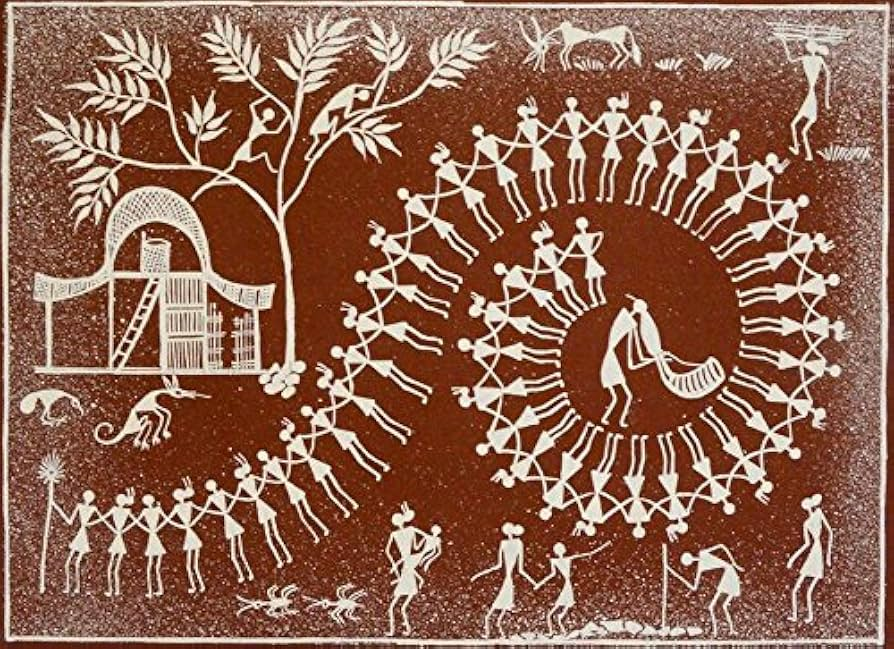

Warli painting feels like life reduced to its purest rhythm. With just simple shapes—circles, triangles, and lines—it tells complete stories of human life. The romance here is earthy and communal. You’ll see people dancing in circles, farming together, celebrating marriages—everything is about unity and togetherness. There’s no individual hero; the entire community moves as one. It feels like a celebration of simple living and shared joy.
Warli art comes from the Warli tribe of Maharashtra. • Dates back over 2000 years • Traditionally painted on mud walls of houses • Created during weddings, harvests, and rituals One of the most important themes is the “Lagnachauk”—a sacred square painted during marriage ceremonies, symbolizing prosperity and fertility.
Warli art is famous for its minimal yet powerful style: • Basic Geometric Shapes • Circle → sun and moon • Triangle → mountains and trees • Square → sacred space • White on Brown Background White paint (rice paste) on mud walls • Stick Figures Human forms made using two triangles joined at the tip • Narrative Scenes Daily life: farming, dancing, hunting, rituals • No Perspective or Depth Flat and symbolic storytelling
Warli paintings are traditionally made by women of the Warli tribe. • Passed from mother to daughter • Created as part of ritual and daily life • Not originally commercial—purely cultural expression In modern times, artists like Jivya Soma Mashe helped bring Warli art to global recognition.